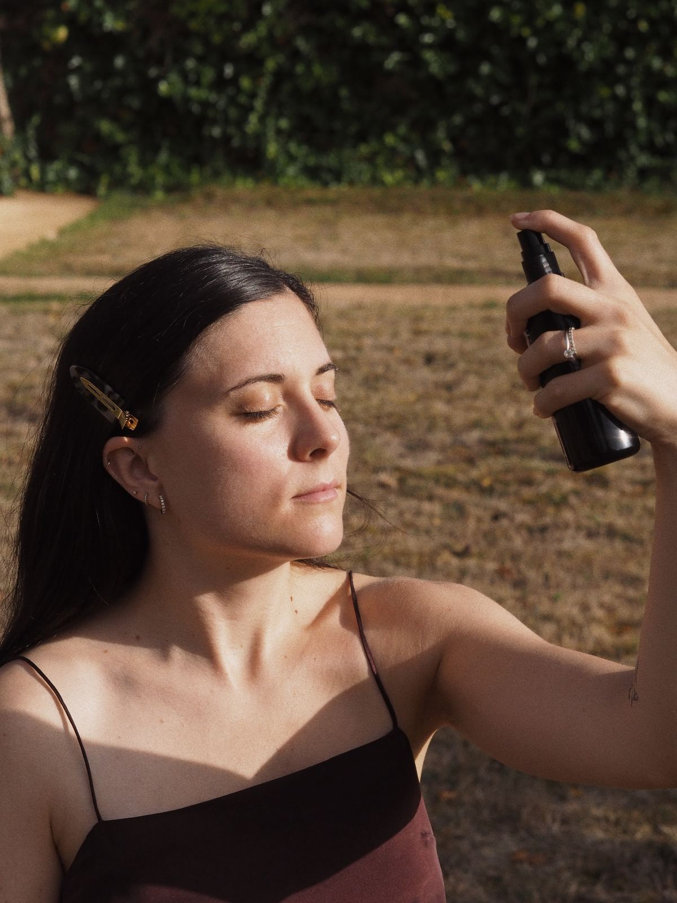
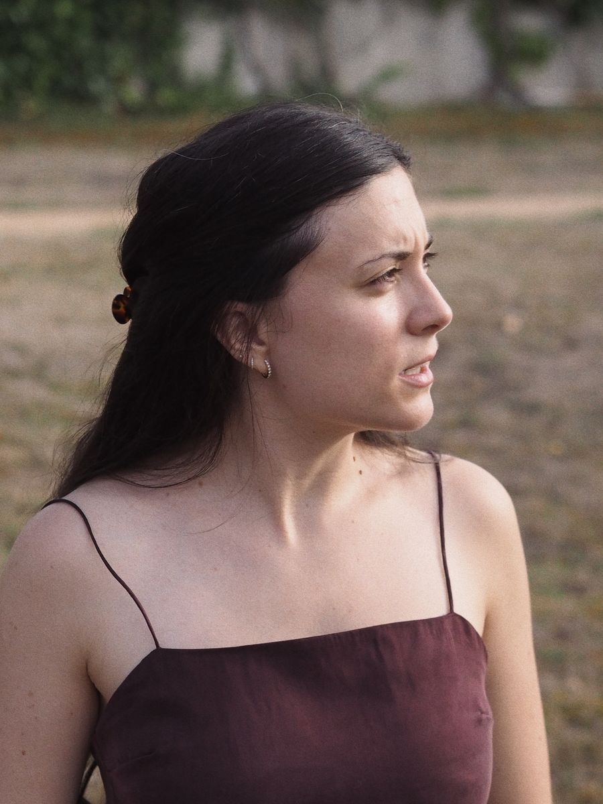
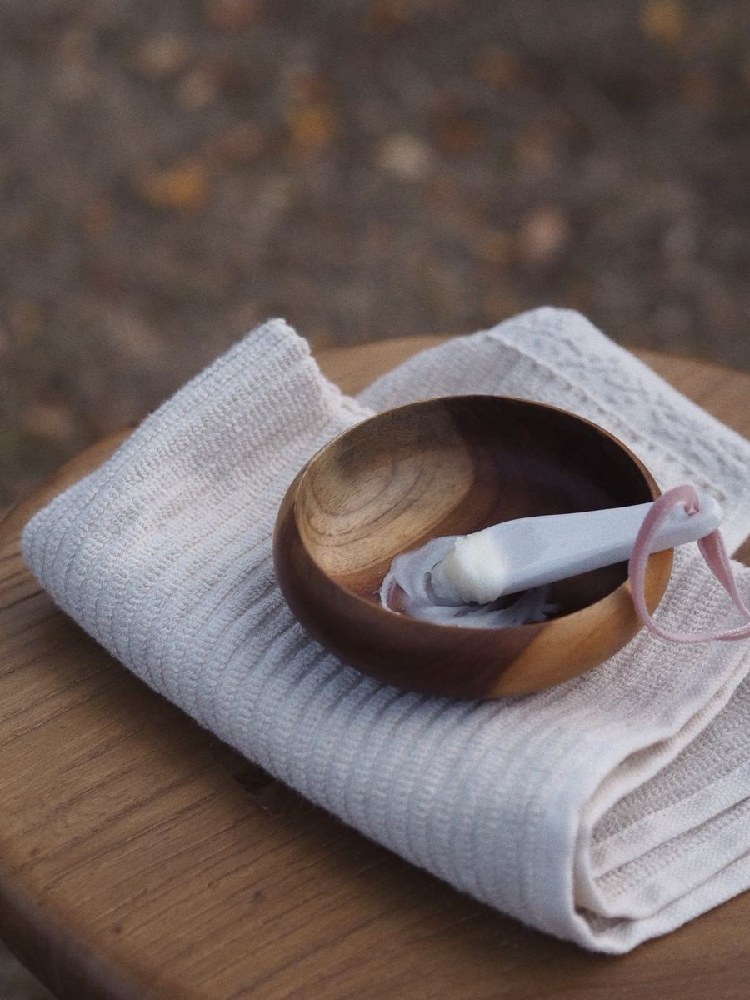
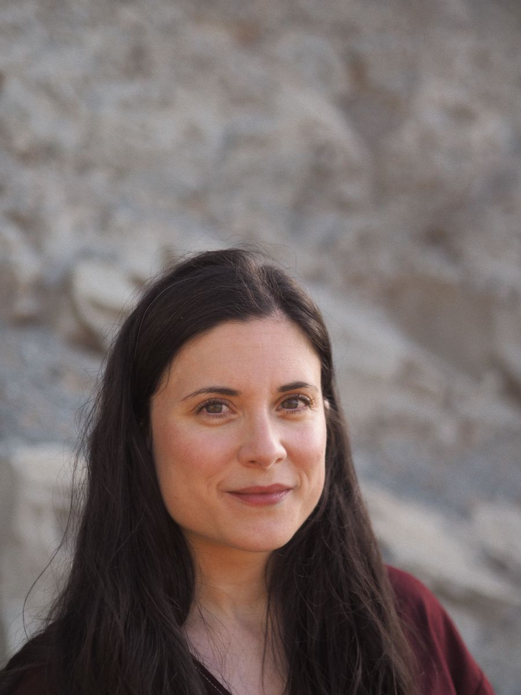
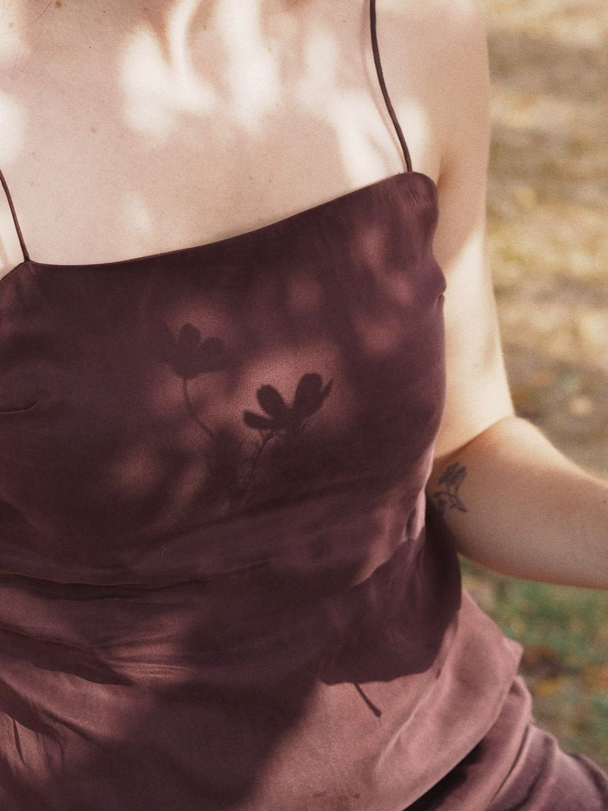
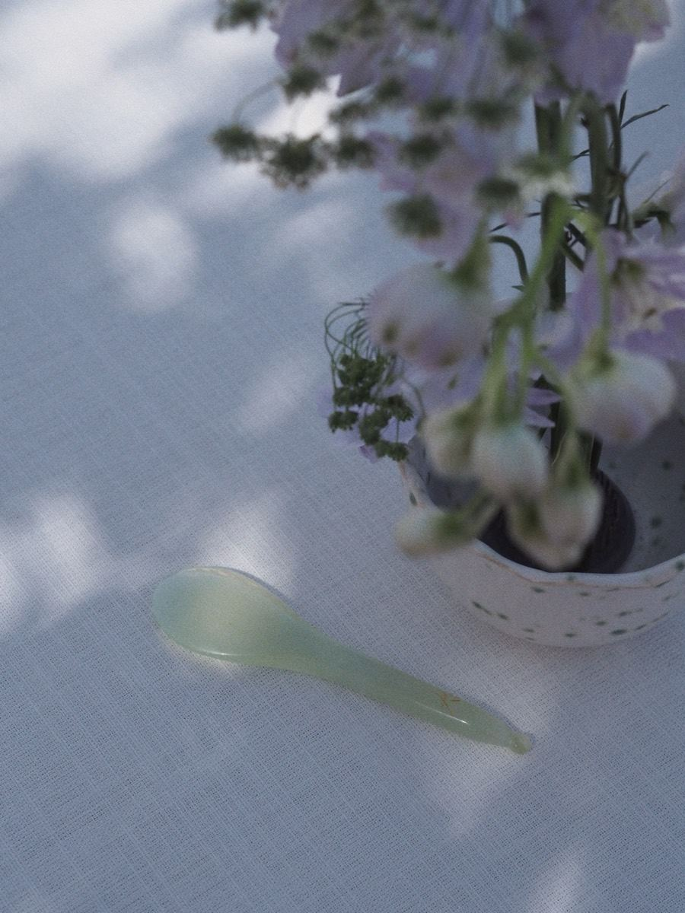
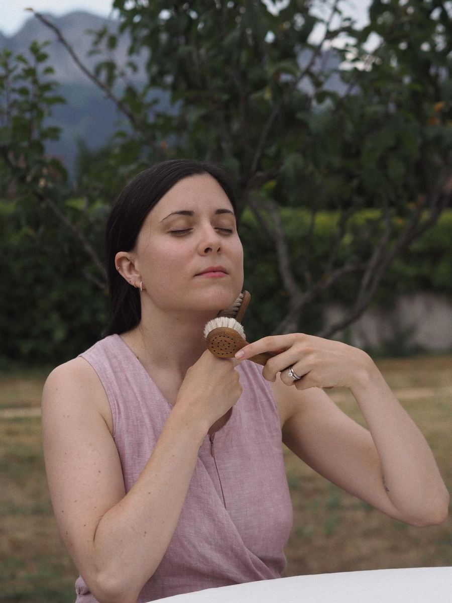
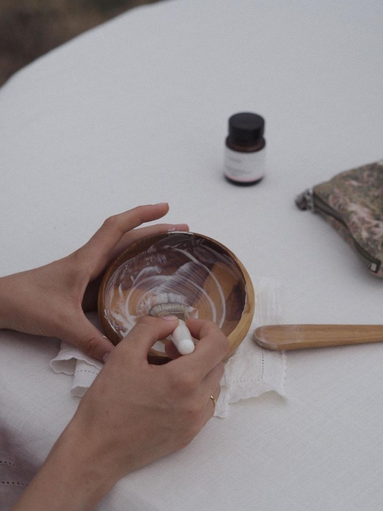
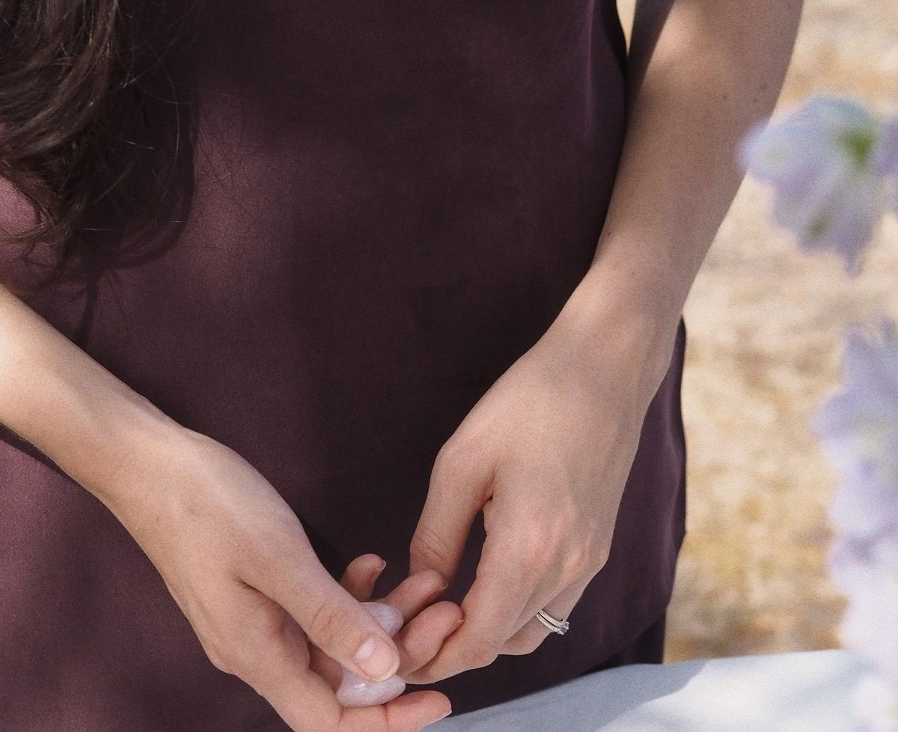

Una sesión individual conmigo. Antes de la llamada, completas un test breve de tu piel — tipo, hábitos, ciclo, objetivos. Así llego a nuestra cita conociéndote ya un poco.
A partir de ahí, hago un diagnóstico real y construimos juntas un ritual adaptado a ti: los productos concretos que necesitas, el orden, la frecuencia y el porqué de cada paso.
Cómo funciona
Completas un test breve de tu piel — tipo, hábitos, ciclo, objetivos — y firmas el consentimiento de protección de datos. Así llego a nuestra cita conociéndote ya un poco.
Videollamada de 45 minutos: repasamos juntas el test, resolvemos dudas y hago el diagnóstico real de tu piel.
Recibes tu ritual personalizado por escrito — rutina AM y PM, productos, frecuencia y el porqué de cada decisión. Después, un acompañamiento de 3 semanas: pruebas la rutina con muestras y cerramos con una videollamada de ajuste.
350€ · Disponible para clientas en Península y Baleares.
Esta asesoría trabaja exclusivamente con cosmética natural y, si es posible, orgánica. Al apuntarte, confirmas que estás dispuesta a construir tu rutina con este enfoque. No se recomiendan productos de cosmética convencional.
Quiero saber másUn taller pequeño, con espacio para entender. La primera parte es de conocimiento: explico cómo funciona la piel desde dentro — su estructura, sus mecanismos, por qué reacciona como reacciona — con el rigor científico de mi formación en biología molecular y bioquímica, pero en un lenguaje que se entiende y se puede llevar a casa.
La segunda parte es práctica: técnicas de masaje facial y el uso de las piezas de ritual — gua sha, ventosas, cepillado en seco — con su base fisiológica real. Cada asistente se lleva un dossier de referencia para seguir practicando.
Grupos reducidos.
Quiero saber másSala de prensa · 2026
Ciencia que se convierte en ritual.

PDF · 4 páginas
Fundadora · Marca · Temas · Contacto
01 La fundadora

Bioquímica y bióloga molecular · Fundadora de GAROA
Sarai Orrego es bioquímica y bióloga molecular por la UPV/EHU, con un máster en Biomedicina y experiencia investigadora en un grupo de cáncer infantil. Al elegir entre investigación y docencia, optó por enseñar, pero nunca dejó de lado la cosmética natural: trabajó en el sector y se ha formado en formulación cosmética y en piel. En 2023 fue madre, y de ese giro vital nació GAROA · Organic Skin Rituals: la marca que siempre había soñado, creada también para poder conciliar. Su criterio se apoya en lo que dice la ciencia, no en las modas de la cosmética. Vive en Bilbao, su ciudad, con raíces gallegas y andaluzas.
«No creo en las rutinas de mil pasos para no envejecer. Creo en una piel sana y bonita como resultado de ritualizar el cuidado de la piel y vivirlo como recarga, presencia y placer sensorial.»Sarai Orrego · Fundadora de GAROA
02 La marca
garoa
/ga·ˈro·a/ · euskera · sustantivo
1.Rocío. Las microgotas que la noche deja sobre la hierba, las mismas que el tónico deja en la piel.
GAROA significa «rocío» en euskera. El nombre nació al combinar sílabas de los apellidos de su fundadora, y cuando descubrió que la palabra existía, fue un sí inmediato: el rocío deja en la hierba las mismas microgotas que el tónico deja en la piel, uno de sus pasos favoritos del ritual y de los que menos se habla.
La marca nace de un gesto de Sarai: aplicarse sus cremas por la noche, dejarse envolver por sus olores y texturas, y despertar con la piel jugosa. GAROA entiende el cuidado de la piel como autocuidado, un momento para conectar con los sentidos y desconectar del ruido externo, vivido como recarga y no como culpa u obligación.
Con ciencia y botánica, ayuda a comprar con criterio, lejos de los estándares estéticos ajenos y de las rutinas de cien pasos, y sin miedo a envejecer con una piel sana y bonita. Hoy ofrece asesorías personalizadas, retos y talleres; en diciembre de 2026 llegan sus primeras piezas de ritual.

03 Fuente experta
Sarai atiende consultas y entrevistas sobre piel, ingredientes y ritual, con la mirada de una bioquímica.
04 Imágenes






Escríbenos a hola@garoa-skinrituals.com indicando el medio y la publicación, y te enviaremos el enlace de descarga. Crédito obligatorio: © Olaia · Verbena Studio.
05 Contacto de prensa
hola@garoa-skinrituals.com